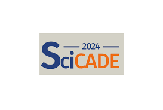

March 03–07, 2025 — SIAM CSE 2025, USA
I had the opportunity to attend and speak at SIAM CSE 2025 in Fort Worth, Texas — a fantastic gathering of experts in computational science and engineering. I presented "On Asymptotic-Preserving Dynamical Low-Rank Approximation for Thermal Radiative Transfer" and connected with many inspiring researchers pushing the boundaries of CSE.

July 15–19, 2024 — SciCADE 2024, Singapore
I travelled to Singapore to give a talk at SciCADE 2024. I presented "A multi-scale low-rank integrator for Marshak waves" — a great experience to learn about recent advances in differential equations and scientific computing.

2025 — ICOSAHOM, Montreal, Canada
I attended ICOSAHOM (International Conference on Spectral and High Order Methods) in Montreal, Canada. A great opportunity to present my work and discuss the latest developments in spectral and high-order numerical methods with the community.

2025 — ENUMATH, Heidelberg, Germany
I attended ENUMATH (European Conference on Numerical Mathematics and Advanced Applications) in Heidelberg, Germany — a leading European forum for numerical analysis and scientific computing, bringing together researchers from across the continent.


{kind=link}